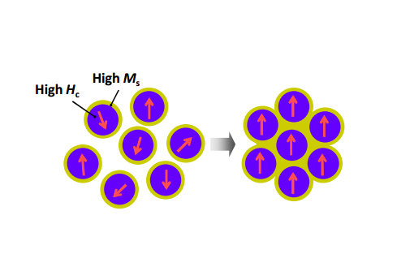

One of the most straight forward approaches to bottom-up fabrication of high energy permanent magnets is through the use of core-shell technology where a magnetically hard core material is coated with a magnetically soft layer. This work in conjunction with University of Delaware is focused on chemically coating SmCo nanoflakes with a magnetically soft Fe or FeCo alloys.